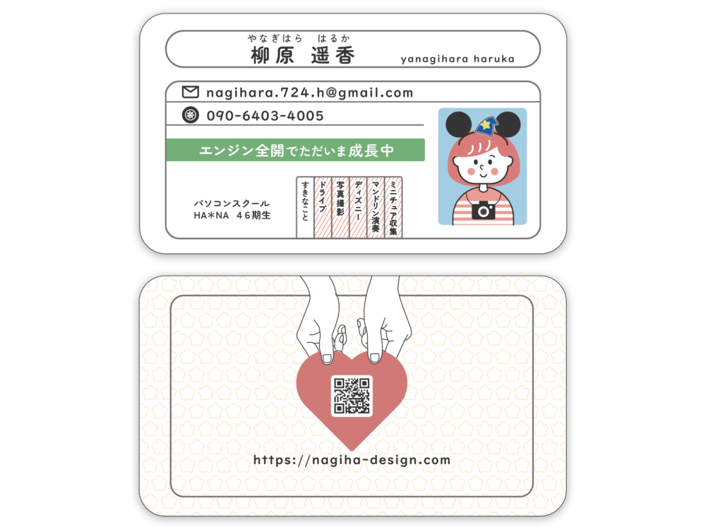

自身の名刺
グラフィックデザイン

- 概要
- 交流会用に自分自身の名刺を作成しました。表面には連絡先、裏面にはポートフォリオサイトへのリンクを載せています。
- ターゲット層
- 交流会やイベントでお会いしたデザイナーやエンジニアなどの方々
- 目的・ゴール
- 名刺をお渡しした方に、自分の人となりを知ってもらい顔と名前を覚えてもらう。
交流会での話のきっかけづくりにする。
興味を持ってもらい、ポートフォリオサイトを見ていただく。
- 制作ポイント
-
ポートフォリオサイトのテーマが『ドライブ』だったことから強い印象をもってもらえるよう『免許書』をモチーフにしたユーモアがあるデザインにしました。
似顔絵のイラストは自作で、全体的にパステルカラーでかわいらしい印象をもっていただけるような色を使用しました。
交流会で話のきっかけ作りになるように、好きなものを織り込んだり、似顔絵のイラストにさりげなくモチーフとしてあしらいました。
また、紙選びもこだわり、イラストと全体の雰囲気があうと考えた光沢紙に印刷しています。 裏面のポートフォリオサイトへのリンクは、見ていただきたいという気持ちを込めて、ハートをお渡ししているデザインにしました。
- 制作期間
- 5時間
- 使用ツール
- Illustrator